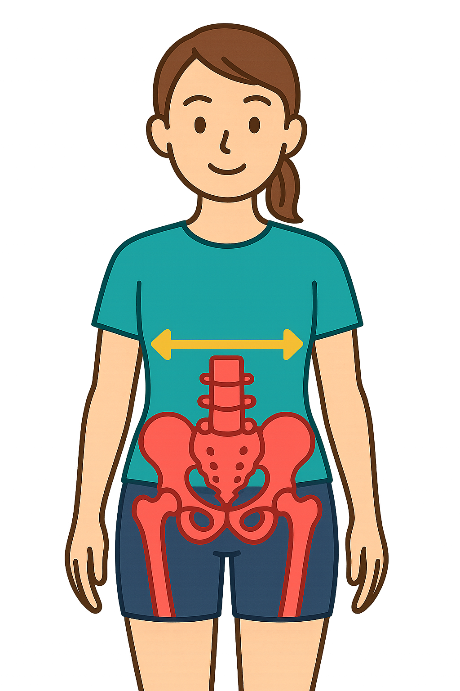
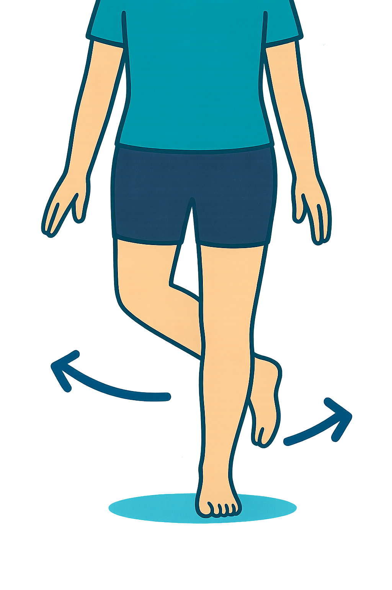
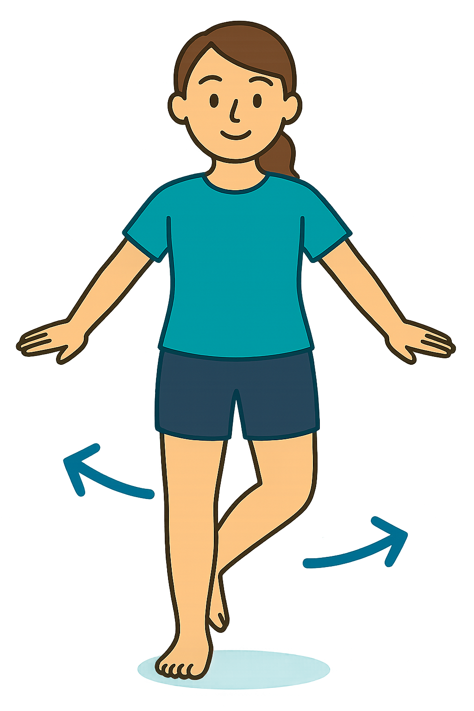

歩行解析アプリ
今日の歩き方をチェックしてみましょう
👤
患者様用
今日の歩き方スコアとセルフエクササイズを確認できます
🩺
理学療法士用
左右別の詳細解析・THA代償動作・履歴
📘 アプリの使用方法
📸 撮影補助
🎥 動作解析
📘 アプリの使用方法
（従来の説明文をそのまま配置）
📸 撮影補助モード
撮影開始
カメラ停止
🎥 動作解析モード
手術日：
動作を解析する
① 歩き方の結果（左右別）
① あなたの歩行の特徴
今日の歩き方スコア：
/ 100

骨盤の傾きのイメージ

足の動きのイメージ
② あなたにおすすめのセルフエクササイズ

エクササイズの姿勢イメージ
③ 回復の変化を比べる
条件
骨盤傾き
外転
内転
速度（%）